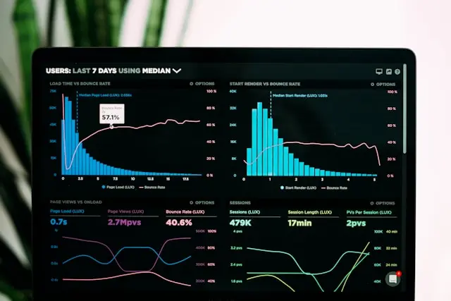

An analysis of forty incident post-mortems shows the warning was almost always present in the data weeks in advance — the failure was in the model that was supposed to be watching.

Why a risk posture that's only reassessed four times a year is already out of date by the second week.
We walk through three real portfolios where a quarterly cadence let exposure drift for weeks before anyone noticed.
Read now →A walkthrough of the signal sources and mitigation sequence behind one of our largest year-over-year gains.
From first signal to closed gap in eleven weeks — the exact playbook their risk team followed.
Read now →A short guide for teams tempted to override a high-confidence signal during a live incident.
A fast gut-check for on-call analysts before they override what the model is telling them.
Read now →No signals in this category right now.
Why the gap between detection and action is the real driver of loss, not detection itself.
Mapping how single-source dependencies turned three-day delays into three-month ones.
A field guide to reading probabilistic risk output without over- or under-trusting it.
How enterprise risk teams are replacing quarterly spreadsheets with a live index.
A cost model for what one extra week of lead time is actually worth, by industry.
What boards should ask before trusting a model's recommendation over an analyst's.
0 signals tracked
0 signals tracked
0 signals tracked
0 signals tracked
0 signals tracked
0 signals tracked
One email a week — the emerging risk signals worth knowing about, before they're a headline.
No spam. Unsubscribe anytime. ~4,200 risk professionals subscribed.
You're on the list — first digest lands this Friday.